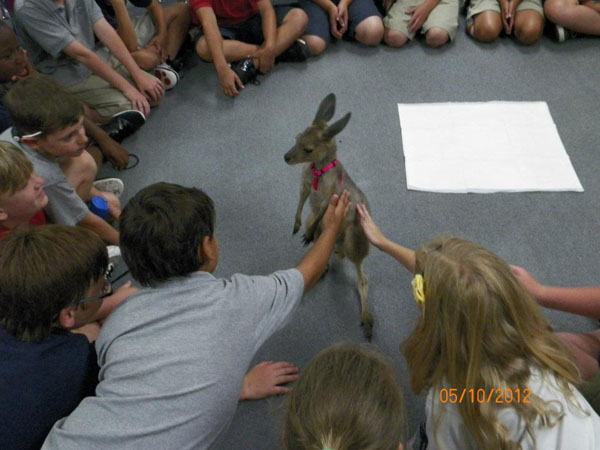
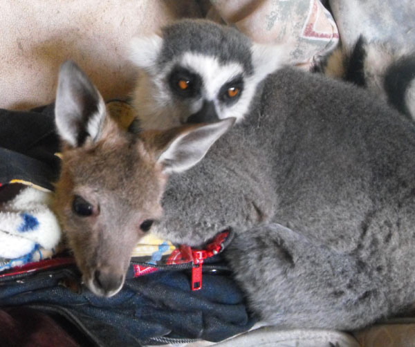

Exotic Experience in Orlando!
Meet Love Bug

Love Bug, a.k.a. "Bug," is a one-year-old male Western gray kangaroo who will play with anyone and anything put in front of him.
He is a stickler on grooming and believes all the animals’ need a bit of that! He is a sweetheart and loves to hug people and other animals.


Quick facts about Western Gray Kangaroos
- Large and very common, found across southern part of Australia
- They have thick, coarse fur and range in color from pale grey to brown
- They feed at night mainly on grasses but sometimes leafy shrubs and low trees
- Males are up to twice as large as females
- Mature males have a distinctive curry-like odor, which gives them their nicknames: Stinker
- Gestation period is 30-31 days when the baby joey attaches to the teat in the pouch for 130-150 days
- They are macropods: The word "macropod" is a Greek word meaning long-footed. A macropod is a marsupial with long hind legs, which tend to use hopping and jumping as their main means of locomotion (movement).